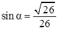
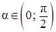

Впишите правильный ответ.
Найдите , если  и .


КЭС: 1.5 Синус, косинус и тангенс числового аргумента. Арксинус, арккосинус, арктангенс числового аргумента; 1.8 Преобразование выражений
Тип ответа: Краткий ответ
Источник ФИПИ